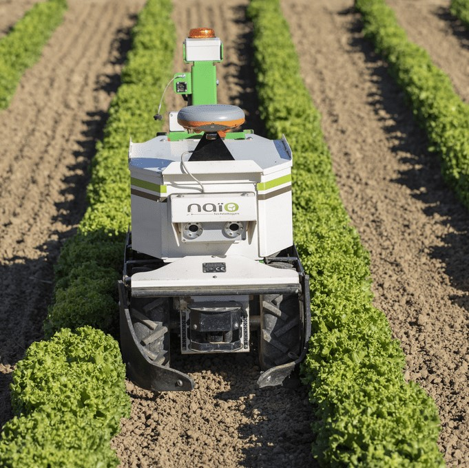
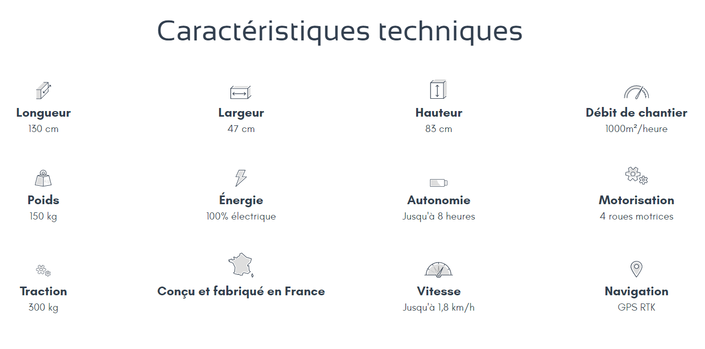
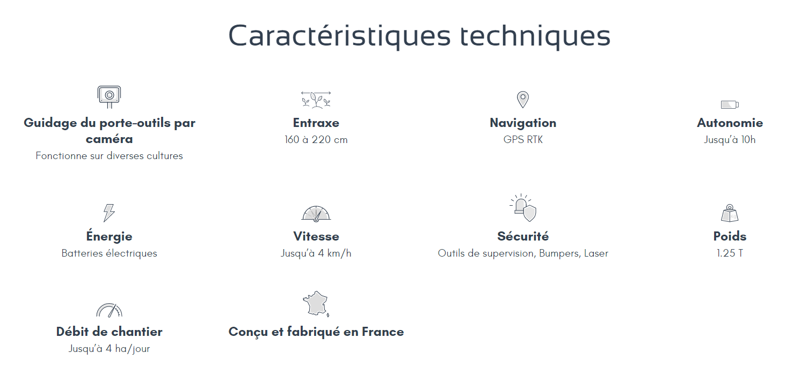
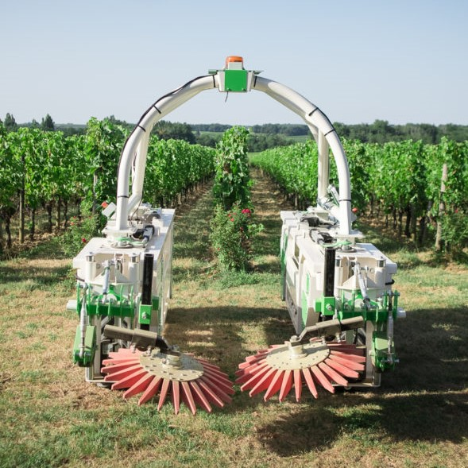
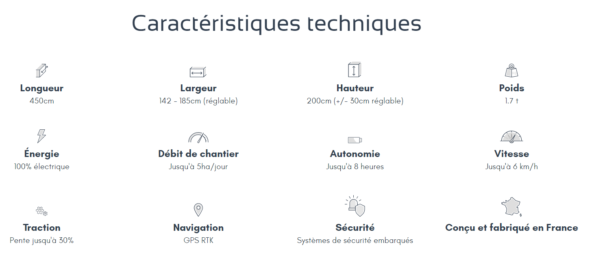

Projet : Robotique agricole
L’entreprise
Naïo Technologies est une startup de la région toulousaine spécialisée en
robotique agricole, créée en 2011 elle est pionnière dans la robotique agricole.
Naïo Technologies conçoit, développe et commercialise des robots autonomes
100% électriques pour assister les agriculteurs.
Les enjeux
-
Facilliter la transition écologique du monde agricole.
-
Améliorer les conditions de travail des agriculteurs en les aidant dans leurs tâches.

Le projet
Ces robots permettent ainsi d’alléger la charge de travail, d’optimiser la rentabilité
des exploitations tout en limitant l’utilisation de substances chimiques. Tous les robots
Naïo sont guidés par GPS RTK, ce qui permet d'avoir une précision centimétrique pour un désherbage efficace
et précis, sans herbicides, qui respecte les sols et les cultures.
Respectueux des hommes et de l’environnement, les robots Naïo répondent aux enjeux actuels
du monde agricole.
Quelques chiffres
Produits
* Cliquer pour ZOOMER
Oz


Dino


Ted

